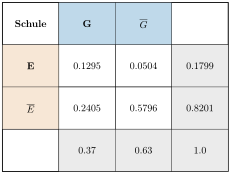
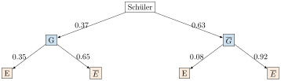

Aufgabe 5.7
Fahrstuhleffekt im Schulsystem? In Deutschland besuchen $37\%$ aller 10- bis 16-Jährigen das Gymnasium. Jedoch nur $35\%$ dieser Jugendlichen haben Eltern, die das Gymnasium selber kennen. Umgekehrt findet man unter den Schülerinnen und Schülern, die eine Haupt- oder Realschule (CH: Real- bzw. Sekundarschule) besuchen, nur $8\%$, deren Eltern ein Gymnasium absolvierten.
Man bereite die Daten in einer Vierfeldertafel auf und werte eigene Fragestellungen aus.
- Definieren Sie G (Gymnasium) und E (gymnasiale Eltern) als Ereignisse
- Nutzen Sie die Formel der totalen Wahrscheinlichkeit
- Berechnen Sie zuerst $P(E)$, dann alle Schnittwahrscheinlichkeiten
- Formulieren Sie eigene Fragen wie: «Wie wahrscheinlich ist Gymnasiumsbesuch bei gymnasialen Eltern?»
Gegeben:
- $P(G) = 0.37$ (37% besuchen Gymnasium)
- $P_G(E) = 0.35$ (35% der Gymnasiasten haben gymnasiale Eltern)
- $P_{\overline{G}}(E) = 0.08$ (8% der Nicht-Gymnasiasten haben gymnasiale Eltern)
Schritt 1: Berechnung der Gesamtwahrscheinlichkeit $P(E)$
Mit der Formel der totalen Wahrscheinlichkeit: $$P(E) = P_G(E) \cdot P(G) + P_{\overline{G}}(E) \cdot P(\overline{G})$$ $$P(E) = 0.35 \cdot 0.37 + 0.08 \cdot 0.63 = 0.1295 + 0.0504 = 0.1799$$
Schritt 2: Berechnung aller Schnittwahrscheinlichkeiten
- $P(E \cap G) = P_G(E) \cdot P(G) = 0.35 \cdot 0.37 = 0.1295$
- $P(E \cap \overline{G}) = P_{\overline{G}}(E) \cdot P(\overline{G}) = 0.08 \cdot 0.63 = 0.0504$
- $P(\overline{E} \cap G) = P(G) - P(E \cap G) = 0.37 - 0.1295 = 0.2405$
- $P(\overline{E} \cap \overline{G}) = P(\overline{G}) - P(E \cap \overline{G}) = 0.63 - 0.0504 = 0.5796$
Lösungsweg 1: Vierfeldertafel

Lösungsweg 2: Baumdiagramm

Analyse des Fahrstuhleffekts:
1. Zentrale Frage: Wie gross ist die Chance von Kindern gymnasialer Eltern, selbst das Gymnasium zu besuchen?
$$P_E(G) = \frac{P(E \cap G)}{P(E)} = \frac{0.1295}{0.1799} = 0.720 = 72.0\%$$
Im Vergleich bei nicht-gymnasialen Eltern: $$P_{\overline{E}}(G) = \frac{P(\overline{E} \cap G)}{P(\overline{E})} = \frac{0.2405}{0.8201} = 0.293 = 29.3\%$$
2. Relatives Risiko: $$\frac{P_E(G)}{P_{\overline{E}}(G)} = \frac{72.0\%}{29.3\%} = 2.46$$
Kinder gymnasialer Eltern haben eine 2.5-fach höhere Chance!
3. Weitere interessante Auswertungen:
- Bildungsaufsteiger: 65% der Gymnasiasten haben nicht-gymnasiale Eltern
- Bildungsabsteiger: 28% der Kinder gymnasialer Eltern besuchen nicht das Gymnasium
- Reproduktion: Nur 12.95% aller Schüler haben gymnasiale Eltern UND besuchen das Gymnasium
Fazit:
Der «Fahrstuhleffekt» ist deutlich nachweisbar. Trotz formaler Chancengleichheit haben Kinder aus gymnasialen Elternhäusern eine 2.5-mal höhere Chance auf Gymnasiumsbesuch. Dennoch zeigt sich auch Bildungsmobilität in beide Richtungen.